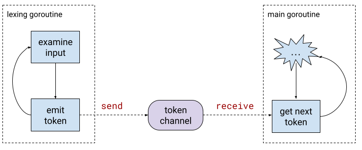
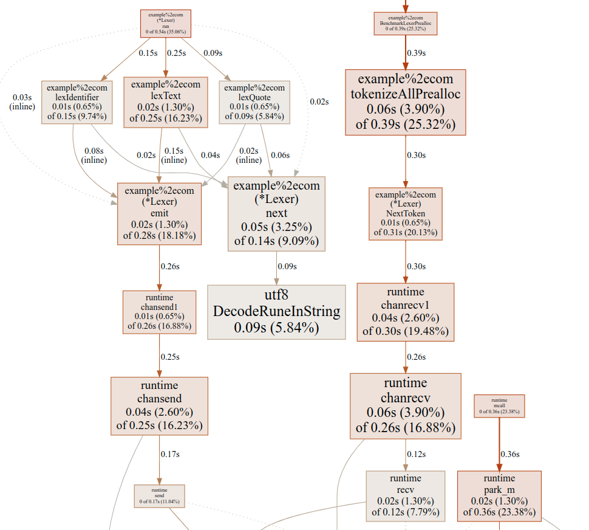
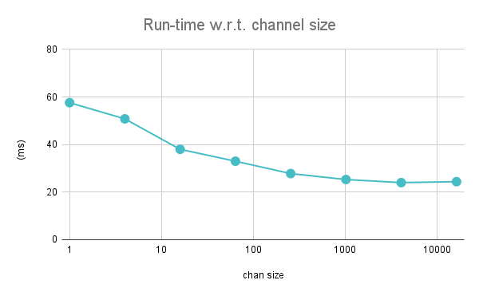

Back in 2011, Rob Pike gave a talk on the topic of Lexical Scanning in Go, where he presented an interesting approach to lexical analysis with coroutines (implemented via goroutines communicating over a channel). Since I've been pondering the connection between coroutines and state machines in the past, Rob's talk inspired me to try approximating this approach in Python using sub-generators.
Since 2011, I've seen this talk and the technique presented in it mentioned many times, both in Go forums and in general programming communities. There's something in this approach that feels elegant - it's a problem very well suited for coroutines. However, there was always a small nagging voice in the back of my head doubting the efficiency of the approach.
Since I've recently found myself playing with lexers again, this seemed like a good opportunity to revisit Rob Pike's lexer and compare its performance to other approaches, using the same problem and benchmark for fairness.
Rob Pike's original lexer
In the talk, Rob is describing a lexer he designed for Go's templating package. The lexer presented in the talk and slides is relatively simple; a much more featureful version of it still lives in the text/template package - lex.go. As such, this lexer is heavily used in production every day.
I've transcribed the original lexer from the talk into my GitHub repository; it's available here, with tests.
The main aesthetic appeal of this lexer is avoiding an explicit state machine by using a separate goroutine to perform the lexing. This goroutine switches states by returning a new "state function", and emits tokens onto a channel which can be read by the lexer's clients.
This approach is particularly attractive when parsing templates because it oscillates between two major states - lexing free-standing text and lexing inside actions delimited by {{ }}. Using the concurrent approach avoids the need to have an explicit "am I inside an action" state flag that has to be checked every time a new token is requested [1].
Lexing TableGen
To be able to have a meaningful performance comparison, I've rewritten my TableGen lexer once again, this time using the coroutine approach. The full code for this lexer with tests is available here.
The API is very similar to my previous TableGen lexers - all the implementation details (like having a channel to read tokens from) are hidden from the user. The token type is the same:
type Token struct {
Name TokenName
Val string
Pos int
}
The NextToken method also has the same signature, though the implementation uses a channel now:
func (l *Lexer) NextToken() Token {
return <-l.tokens
}
The constructor creates a new Lexer, creates a channel for the emitted tokens to go into and launches the goroutine that does the actual lexing:
// Lex creates a new Lexer
func Lex(input string) *Lexer {
l := &Lexer{
input: input,
tokens: make(chan Token),
}
go l.run()
return l
}
The run method serves as a trampoline to advance the lexer from state to state (while the state functions emit tokens into the channel):
type stateFn func(*Lexer) stateFn
func (l *Lexer) run() {
for state := lexText; state != nil; {
state = state(l)
}
close(l.tokens) // no more tokens will be delivered
}
And so on. The implementation follows Rob Pike's lexer very closely, with the same primitives. For the TableGen language, which does not have the "two states" feature of templates, I found this approach to be less of a stylistic win, though it still makes state management simpler.
Performance
In the previous post, the fastest Go lexer achieved with Go 1.18 runs the benchmark in about 6 ms (with a GOGC=1600 setting).
For a level playing field, I ran the new coroutine-style lexer on the same input file, with the same benchmarking invocation and the same GOGC setting:
$ GOGC=1600 TDINPUT=<path to input file> go test -bench=Preall -benchtime=5s
goos: linux
goarch: amd64
pkg: example.com
cpu: Intel(R) Core(TM) i7-4771 CPU @ 3.50GHz
BenchmarkLexerPrealloc-8 80 70507009 ns/op
PASS
ok example.com 5.885s
It takes... 70 ms, more than 10x slower!
While I'm not surprised that this approach is slower, I am somewhat surprised at the magnitude. Let's think this through. What does each lexer do in its hot inner loop?
In my original lexer, each call to the NextLexer function:
- Skips whitespace: iterates over the input string rune by rune until a non-whitespace rune is encountered.
- Examines the current rune and decides which kind of token it belongs to.
- Finishes lexing the token and returns it as a string slice.
Whereas in the coroutine-style lexer, each call to NextLexer:
- Invokes a channel receive on the token channel.
In the meantime, the lexing goroutine:
- Skips whitespace and examines the current rune, just like in the regular lexer.
- Invokes a channel send on the token channel.
The channel send/receive is the main culprit for the large performance difference. Channels in Go are fully synchronized, which implies locking inside the inner loop. Moreover, since there are two goroutines involved that perform channel operations, the Go runtime has much more work to do to handle suspending goroutines when the channel blocks and waking them up when it unblocks. All these operations are highly optimized in Go, but when they appear in the inner loop of a fast scanning process, the relative cost is high.
If we profile the new scanner with pprof, this cost is easily observed:
In the previous lexer, the "fetch next rune" method is very dominant. Here it accounts for only 5.8% of the execution time! Much more time goes on chansend1 and chanrecv1 which are runtime functions with names that should be self-describing. There is also goroutine management code in the runtime that accounts for a large % there.
Using a buffered channel
Go's make primitive creates an unbuffeered channel by default, meaning that every send into it blocks until a receive takes the item out. What would happen if we created a buffered channel instead? Theoretically, this should improve the lexer's execution time as there will be less suspension and waking up of goroutines.
Let's see what different values of the buffer give us; I re-ran the benchmark with buffer sizes starting from 1 to 16384 in jumps of 4x:
As expected, using a buffered channel makes lexing significantly faster, leveling out at 1024 where it takes about 24 ms for our benchmark. This is a large improvement, though still much slower than the 6 ms we had with our non-concurrent lexer.
Channels have many uses in Go; sometimes they are used as synchronization mechanisms, so having a large buffer is not always feasible. In cases like our lexer, a buffer actually makes sense because there should be no problem for the lexing goroutine to run ahead a little bit. Note that this doesn't work for any input kind, though; had we been lexing C, for instance, we'd might want to have a feedback mechanism back into the lexer (for handling the grammar's context sensitivity).
FWIW, the template lexer Rob Pike added to the standard library uses an unbuffered channel. Maybe it would make sense to add a modest buffer there to speed it up somewhat :-) See also go issue #53261.
Does performance matter here?
For the task at hand, the coroutine-style lexer is still plenty fast. Note that it's much faster than some of the Python and JS-based lexers I wrote for the same task a while ago.
This lexer is used by the standard library for parsing templates, but these are (1) rarely very big and (2) almost always OK to parse just once during the lifetime of a program, so the time it takes to parse them is not too important; in other words, it's very unlikely to dominate your application's benchmarks.
That said, I can envision scenarios where this could matter. Suppose you're writing a frontend for a nontrivial programming language (or configuration language etc.) and a fast interpreter for this language [2]. This could lead to the frontend's performance being a bottleneck. In these scenarios, it just may be important to have the fastest lexer you can reasonably implement.
| [1] | I do wonder if this would work in more complicated cases though. In templates, the kinds of tokens that appear inside actions can never appear outside them. But suppose they could; suppose there would be some token TOK which could legally appear both in "text mode" and in "action mode". What would the state function representing TOK return when it's done parsing it? How would it know which mode it has to go back to? It's possible that some sort of explicit state variable would be unavoidable in this scenario. |
| [2] | I'm saying interpreter on purpose, because interpreter backends tend to be very simple and quick. In full compilers, backends typically run many expensive optimizations that dominate the compile time. |